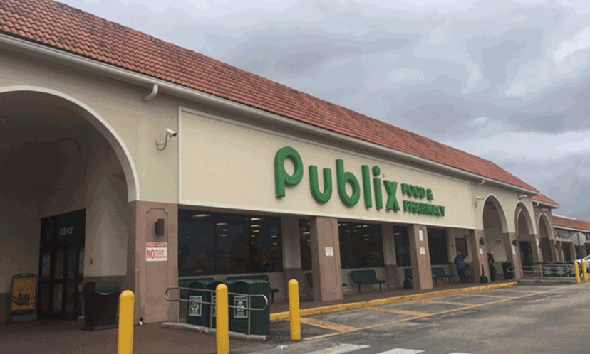

Florida
I grew up Broward county...if you're wondering where that is, its sandwiched between Palm Beach county and Miami Dade county.
Or maybe you remember the 2000 election...yup, we had the recount...hanging chads and all...good times.
But really it wasn't all that bad. Growing up in South Florida was pretty cool. Beaches, warm Christmases, hurricanes, and Publix.
Seattle
Eventually I made the move to Seattle from Florida. I'm not sure how long you need to live in Seattle before you say "I'm from Seattle" but I think I'm on my way.

Movies
Want to talk about movies? I'm all ears (except for most horror movies...I'm working on it but I'm scaredy cat). Movies are more than just entertainment. I believe they can bring you a feeling of the past; they can transport you to the future; they can make you feel seen and understood. There are few things I enjoy more than sitting in a dark room, staring at a big screen, crying or laughing, all while eating a big bag of popcorn. Here are few of my favorites (and not nearly all of them).